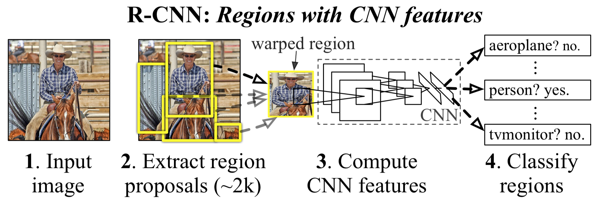

R-CNN 学习笔记
⏰ 2018-05-10 19:16:27
👨🏻💻 painterdrown
1. 摘要
物体检测（Object Detection）的发展在 2012 年出现了停滞的现象，直到 R-CNN 方法的出现。在此之前，最好的方法是”The best-performing methods are complex ensemble systems that typically combine multiple low-level image features with high-level context.”，相比于这个方法，R-CNN 的特点是更为简单(simple)、可拓展性更强(scalable)。
2. 关键点
- one can apply high-capacity convolutional neural networks (CNNs) to bottom-up region proposals in order to localize and segment objects. 将一个高容量的 CNN（自底向上的区域建议）模型应用于图像物体定位和分割。
- when labeled training data is scarce, supervised pre-training for an auxiliary task, followed by domain-specific fine-tuning, yields a significant performance boost. 当训练的数据很稀缺的时候，可以通过有监督的预训练，接着是 domain-specific（不知道怎么翻译比较好） 的微调（微调在这里是指将已有的用于图像分类的 CNN 模型进行参数的微调，从而使得该模型能够用于物体检测），从而达到一个明显的性能提升效果。
3. 算法框架

- Takes an input image. 输入图像。
- Extracts around 2000 bottom-up region proposals. 提取约 2000 个自底向上的区域建议。
- Compute features for each proposals using a large CNN. 将每一个区域输入 CNN，得到特征（固定长度）。
- Classifies each region using class-specific linear SVMs. 对于上一步得到的每一个区域的特征，用线性 SVM 进行分类。
4. R-CNN 简介
- R-CNN 总共有 5 个卷积层，输入像素块大小为 195 * 195，步长为 32 * 32，另外有 2 个全连接层。
- R-CNN 其实就是在 CNN 的基础之上加了 “recognition using regions” paradigm，这样更适合做物体检测和语义分割。
- R-CNN 中每一个区域得到的特征都是定长的。
- 面临训练数据很少的问题，传统的方法是先进行无监督的预训练，接着是有监督的微调。而 R-CNN 则是先在大的辅助数据集上进行有监督的预训练，然后在小数据集上进行 domain-specific 的微调。
- R-CNN 中，主导错误模式的因素是 bounding-box regression method，因为这个方法能有效地提高物体定位的准确率。
- R-CNN 的计算效率比较高，主要体现在两部分：一是 SVM 中的矩阵向量乘法规模比较小；另外一部分则是 greedy non-maximum suppression。
5. R-CNN 物体检测
5.1 模块设计
5.1.1 区域建议
已经有很多的论文提出了 category-independent（分类无关的）生产区域建议的方法。R-CNN 采用的是 Selective Search。
5.1.2 特征提取
R-CNN 使用的是 Krizhevsky 的 CNN 模型，提取出 4096 维的特征向量。在此之前，对于每一个区域，先通过 Affine Transform 转换成 227 * 227 的正方形，再输入 CNN 模型。
5.2 测试时检测
测试过程：Selective Search -> 2000 region proposals -> CNN -> SVM -> greedy non-maximum suppression。
做 greedy non-maximum suppression 是来过滤掉一些区域（这些区域的 IoU 大于某个学习得到的阈值，意思是如果两个区域重叠的部分过多，则淘汰掉得分较低的那一个）。
特征矩阵(2000 * 4096) * SVM 权重矩阵(4096 * N，N 代表图片的分类总数) = 分类得分矩阵(2000 * N)。
5.3 训练
有监督的预训练。把 CNN 放在大的数据集上进行训练，这个数据集的 label 都是 image-level 的，意思就是说数据集中的图片的标注只是”这是一张关于猫的图片”，而不是”这张图片中在 xxx 有一只猫，在 xxx 有 xxx”。也就是说，这个训练集的标注信息跟我们做物体检测理想的训练集标注信息不一样。
Domain-specific 微调。为了将上面的 CNN 应用于新的任务（物体检测）以及新的作用域(warped proposal windows)，用 SGD 来训练 CNN 的参数。将 CNN 中 ImageNet 1000-way 分类层替换成随机初始化的 (N+1)-way 分类层。除此之外，保留 CNN 的其他结构。将 IoU >= 0.5 的区域视为正样本，否则视为负样本。SGD 的学习比率为 0.001，在每个 SGD 的迭代中，采样方法为：32 正样本 + 96 负样本（背景）= 128 mini batch。
物体类别分类器。如果某个区域中包含了汽车的一部分，如何将这个区域标定为汽车检测的正样本？解决的方法是 IoU overlap threshold。经过调试可以得知 threshold 取 0.3 时效果最好。
6. 可视化、消融、错误模式
- 可视化学习特征。第一层的结果可以直接可视化，也很容易进行理解。对于其他的层，Zeiler and Fergus 提供了相应的方法。基本思想是对检测器的得分进行排序，而不进行平均化处理，而是关注它们的激活条件。
- 消融学习。从模型中减少某些层，看减少之后的影响，从而来表现减少地那一层在整个 R-CNN 中的作用。论文从有无微调的维度上进行 layer-by-layer 的消融学习。
- 网络架构。像之前提到的，CNN 只是在 Krizhevsky 的基础之上进行微调，因此 R-CNN 的网络架构跟其很像。衍生出 O-Net 和 N-Net，前者的 mAP 得分更高，但是花费的时间却是后者的 7 倍。
- 检测错误分析。利用 Hoiem et al 的错误分析工具。
- Bounding-box 回归。受到 DMP 的启发，R-CNN 训练一个线性回归模型来预测一个新的检测窗口（已知 pool5 层输出的特征之后）。
7. Resources